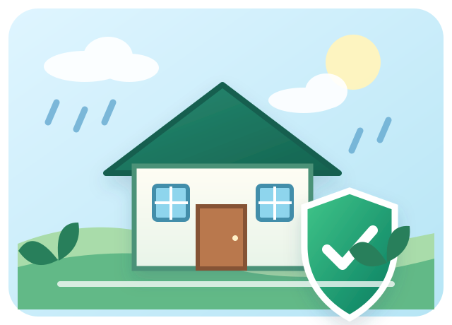
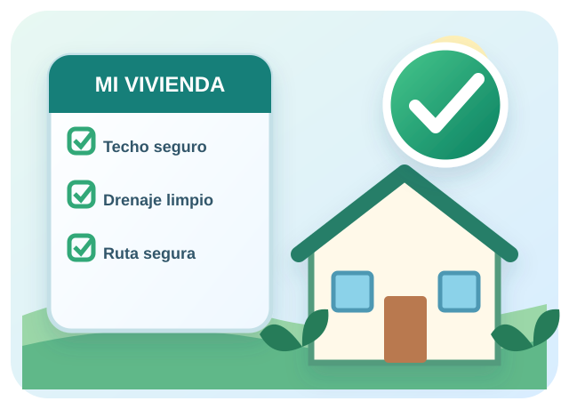
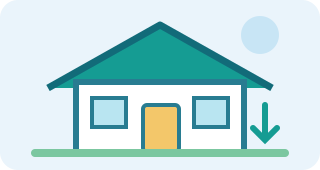

01
Revisa el drenaje
Mantén libres de residuos los espacios destinados al paso y evacuación del agua.
Evalúa de manera rápida y sencilla algunas condiciones de tu vivienda frente a lluvias intensas asociadas al Fenómeno El Niño.


Responde las cinco variables de riesgo. Cada respuesta vale de 1 a 3 puntos, por lo que el puntaje máximo es de 15 puntos.
Prepararse con anticipación ayuda a proteger la vivienda y a mejorar la capacidad de respuesta ante lluvias intensas.
Mantén libres de residuos los espacios destinados al paso y evacuación del agua.

Observa periódicamente techos, paredes y otros elementos que puedan presentar deterioro.
Identifica zonas seguras y organiza acciones preventivas con tu familia.
Presta atención a las recomendaciones y alertas oficiales durante eventos climáticos.
Es un fenómeno climático que puede modificar las condiciones habituales y favorecer periodos de lluvias intensas en distintas zonas. Conocer sus posibles efectos ayuda a fortalecer la prevención.
Las precipitaciones pueden generar acumulación de agua y afectar viviendas y vías.
Techos, paredes y sistemas de drenaje pueden requerir mayor atención preventiva.
La propuesta considera las necesidades de familias y viviendas de Sullana.
Tres variables base y dos variables adicionales permiten construir un puntaje máximo de 15 puntos.
El sistema suma las cinco variables, con un máximo de 15 puntos, y aplica las condiciones FEN definidas en el algoritmo.
Pocos factores identificados. Mantén las medidas preventivas.
Existen factores que requieren atención y mantenimiento.
Se recomienda priorizar acciones preventivas y buscar orientación técnica cuando corresponda.
Una familia informada puede organizar mejor sus acciones de prevención y respuesta.
Revisa el techo, limpia drenajes, protege documentos e identifica zonas seguras.
Mantente informado, evita zonas inundadas y sigue las indicaciones oficiales.
Evalúa las condiciones con precaución, evita zonas peligrosas y reporta daños cuando corresponda.
Marca las acciones que ya realizaste y observa tu avance.
Una herramienta digital sencilla que convierte información de la vivienda en orientación preventiva.
Reconoce factores de vulnerabilidad.
Convierte las respuestas en un puntaje.
Entrega recomendaciones preventivas.
Promueve una cultura de prevención.
Facilitar a las familias de Sullana una herramienta digital sencilla que permita reconocer factores de vulnerabilidad de su vivienda y promover acciones preventivas frente a lluvias intensas asociadas al Fenómeno El Niño.
El Fenómeno El Niño puede estar acompañado de lluvias intensas que afectan diferentes zonas. Conocer algunas condiciones de una vivienda permite identificar factores que requieren atención preventiva.
Sullana Eco-Resiliente busca facilitar una primera orientación de forma sencilla, educativa y accesible.
El objetivo no es solo mostrar un número. La herramienta busca que la persona reconozca condiciones de su vivienda, comprenda por qué son importantes y pueda tomar pequeñas acciones de prevención.
Información rápida para entender el funcionamiento de la herramienta.
La evaluación educativa de esta propuesta está planteada como un recurso accesible para orientar a las familias.
No. Es una orientación educativa y no reemplaza una inspección o evaluación realizada por un profesional.
Revisa las recomendaciones, completa el checklist preventivo y prioriza las condiciones que necesiten atención.
Porque la vulnerabilidad de una vivienda puede estar relacionada con diferentes factores y no con una sola característica.
La propuesta busca acercar la prevención a las familias de Sullana mediante información clara, evaluación sencilla y acciones prácticas.
Evalúa tu vivienda y recibe una orientación preventiva.